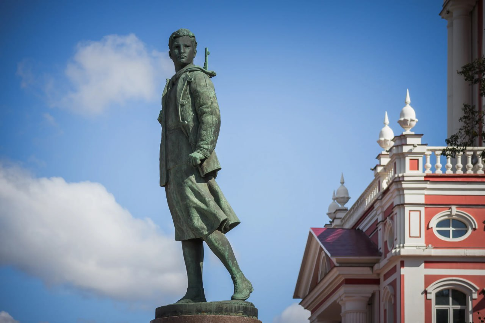

Она по собственной инициативе пошла в райком комсомола, получила путевку, прошла собеседование и была зачислена рядовой в состав разведывательно-диверсионной воинской части № 9903.После обучения Зоя в составе группы была 4 ноября переброшена в район Волоколамска, где группа успешно справилась с заданием (минирование дороги). Вскоре командирам диверсионных групп воинской части №9903 было дано задание в течение 5-7 дней сжечь в тылу противника 10 населенных пунктов в Подмосковье. Зоя вместе с другими бойцами была привлечена к выполнению этого задания. Ей удалось поджечь три дома в Петрищево, где расположились оккупанты. Затем она через некоторое время попыталась осуществить второй поджог, но была схвачена фашистами. Несмотря на пытки и издевательства, Зоя не выдала никого из своих товарищей, не сказала номера части и других сведений, составлявших в то время военную тайну. Она не сказала даже своего точного имени, назвавшись на допросе Таней. Фашисты для устрашения населения решили повесить Зою на глазах у всей деревни. Казнь состоялась 29 ноября 1941 г. Уже с петлей, накинутой на шею, Зоя успела крикнуть врагам: ''Сколько нас не вешайте, всех не перевешаете, нас 170 миллионов. Но за меня вам наши товарищи отомстят''. Тело Зои немцы долго не разрешали предать земле и глумились над ним. 16 февраля 1942 г. Зое Анатольевне Космодемьянской было посмертно присвоено звание Героя Советского Союза. Её именем названы улицы ряда городов, установлен памятник на Минском шоссе близ деревни Петрищево.
